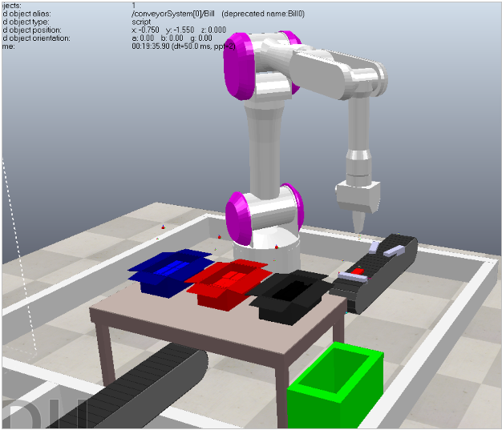
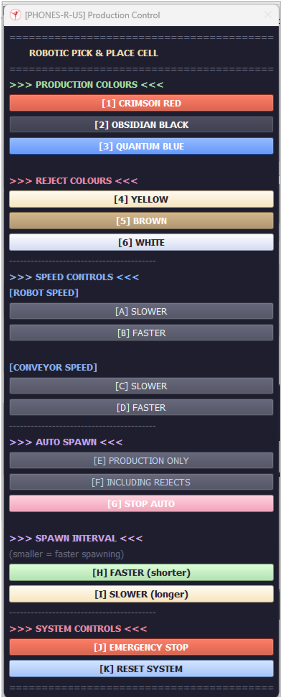
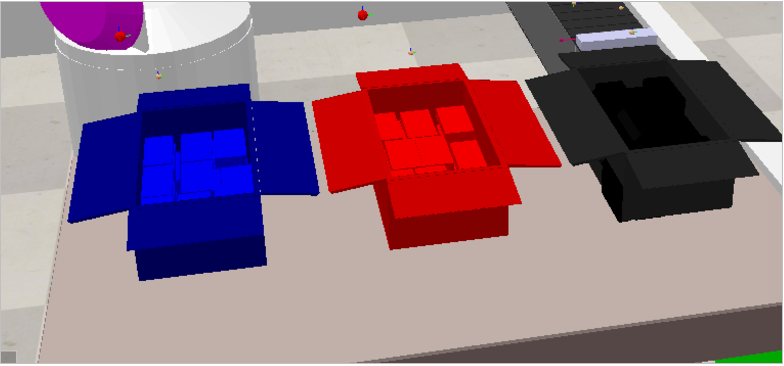
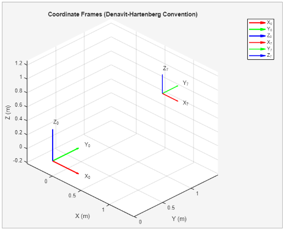
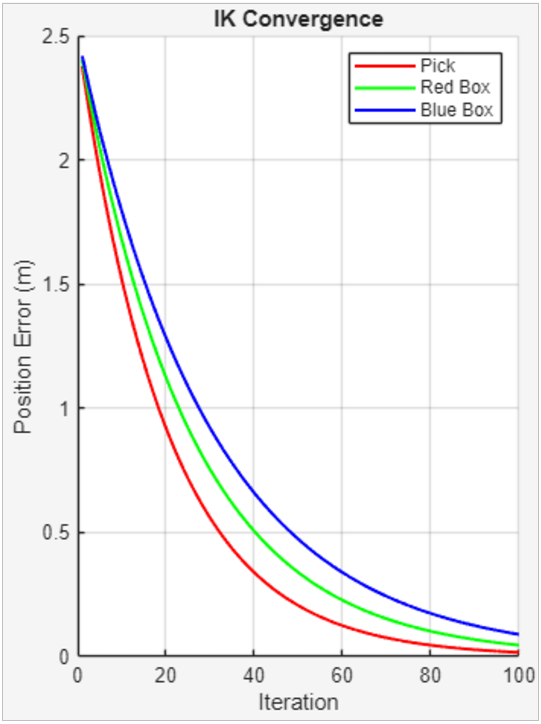
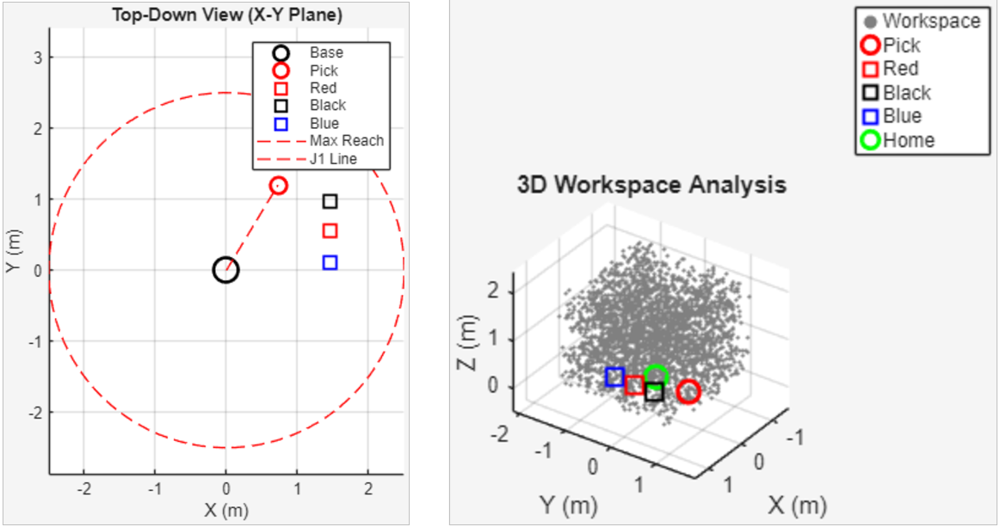

Automated Robotic Pick-and-Place Cell – Phones-R-Us
Project Overview – Phones-R-Us
Phones-R-Us, a mobile phone manufacturer, needed to automate a manual pick-and-place station to handle mPhone 26 units in three colour variants: Crimson Red, Obsidian Black, and Quantum Blue. The target throughput was one phone every two seconds.
Key Requirements Met
- ✅ 5+ DOF robot for future flexibility
- ✅ Colour-based sorting (red/black/blue boxes)
- ✅ Defective unit rejection bin
- ✅ Full box moving capability (63 phones ≈ 13kg)
- ✅ Collaborative operation (no enclosure)
- ✅ 3m × 3m workspace constraint
Workcell Layout – CoppeliaSim
Isometric Workcell View

Operator UI Panel

Box Filled (63 phones)

State Machine & Lua Control
State 0: Idle – waiting for phone State 1: Move to approach point (pick) State 2: Move to pick position State 3: Attach phone (vacuum on) State 4: Move to retreat point (pick) State 5: Move to approach point (place) State 6: Move to place position (colour-dependent) State 7: Release phone (vacuum off) State 8: Move to retreat point (place) → return to State 0
-- Colour detection and routing function getPhoneColour(r, g, b) if r > 0.7 and g < 0.3 and b < 0.3 then return "red" end if r < 0.2 and g < 0.2 and b < 0.2 then return "black" end if b > 0.5 and r < 0.4 and g < 0.4 then return "blue" end return "reject" end
MATLAB Kinematic Analysis
Workspace Visualisation

IK Solver Convergence

Robot at Pick Position

% Denavit-Hartenberg Parameters for UR7DOF DH = [ 0, 0.1273, 0, pi/2; % J1 -pi/2, 0, -0.612, 0; % J2 0, 0, -0.572, 0; % J3 0, 0.1639, 0, pi/2; % J4 0, 0.1157, 0, -pi/2; % J5 0, 0.0922, 0, 0; % J6 ]; % Home position verification: (0.612, 0, 0.928)m – matches manufacturer spec
Performance Evaluation
Cycle Time Breakdown (per phone)
- Pick: Approach → pick → retreat: 0.9s
- Place: Approach → place → retreat: 0.9s
- Conveyor wait + colour detection: 0.6s
- Variation + safety zones: 0.4s
- Realistic total: 2.8 seconds per phone
Target was 2.0 seconds – gap of 0.8 seconds (28% shortfall).
Simulation Demo
Simulation Recording

📹 Video: Full simulation run showing colour sorting, pick-and-place, and box moving. Contact me for access to the recording.
Skills Demonstrated
Resources
🔗 GitHub: github.com/PixelHD543 – MATLAB scripts and CoppeliaSim scene files available on request
🔗 Full Report: 25-page academic report available – contact me for access
🔗 Portfolio Homepage: Back to main portfolio